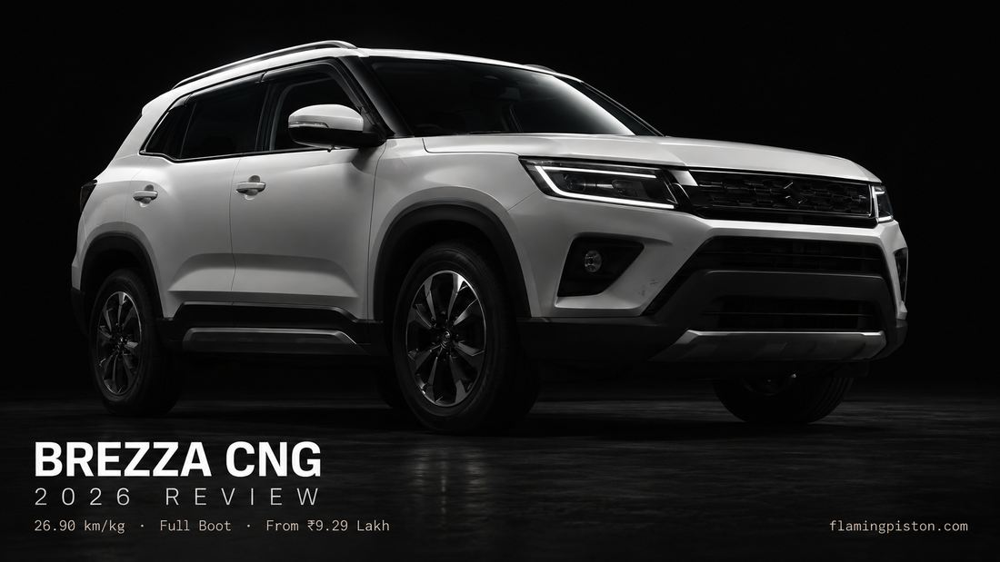

2026 Maruti Brezza CNG Review: Mileage, Ownership & Is It Worth It?

Image: FlamingPiston
The Brezza CNG has always made an honest case for itself — excellent running costs, Maruti's bulletproof reliability record, and factory-fitted safety that an aftermarket kit can't match. The one thing it couldn't answer was the boot space question. The old cylinder sat inside the luggage area and carved out a meaningful chunk of it, which was a genuine problem for family buyers who were the very people most interested in CNG in the first place. The 2026 facelift fixes that. The cylinder moves under the body, the boot comes back whole, and the case for the Brezza CNG just got a lot harder to dismiss.
A Note on This Guide
This guide draws on Maruti Suzuki's official specifications, published automotive reports from Autocar India, CarWale, CarDekho, and V3Cars, and verified delivery reports from Maruti Arena dealerships. The 2026 Brezza CNG is still in phased delivery across India as of this writing. Where real-world ownership data exists specifically for the 2026 facelift variant, we say so. Where it doesn't yet, we draw on the previous-generation Brezza CNG owner community, which ran the same core K15C engine and powertrain.
Quick Verdict
The 2026 Brezza CNG is the most compelling version of this car Maruti has ever built for high-mileage family buyers. The underbody tank eliminates the single biggest practical compromise of the old version. At 26.90 km/kg (ARAI), the running cost arithmetic is convincing for anyone covering 1,500 km or more per month. The limits are real and worth knowing — manual-only, no ZXi+, no spare wheel — but for the right buyer, none of those are dealbreakers. The VXi CNG is the variant we'd recommend for most buyers. The ZXi CNG is worth the premium if the sunroof and rear features matter to you.
The Big Change: Underbody CNG Tank
The previous-generation Brezza CNG used a conventional in-boot cylinder arrangement. Depending on the source and exact measurement methodology, this cut usable boot volume by 80–100 litres compared to the petrol variants — a significant reduction that made the car genuinely awkward for families travelling with luggage. The 2026 facelift uses a dual-cylinder underbody setup, first introduced on the Maruti Victoris, where the tank is mounted beneath the floorboard rather than inside the cargo area. The result: the Brezza CNG now offers the same 328-litre boot as the petrol variants.
That 328 litres isn't a huge number in absolute terms — it's smaller than what some hatchbacks offer — but getting the full amount, rather than a compromised slice of it, changes the practical calculus entirely for a family that also wants CNG economics. If you regularly need that space, the old Brezza CNG was a difficult sell. The 2026 version isn't.
One thing the underbody move doesn't fix: the Brezza CNG still doesn't come with a spare wheel. All three CNG variants are supplied with a puncture repair kit and tyre inflator only. For buyers who drive regularly in areas where tyre shops or roadside assistance may be sparse, this is worth factoring in.
Engine, Power & What CNG Mode Feels Like
The CNG powertrain uses the same 1.5-litre K15C four-cylinder engine found in the naturally aspirated petrol Brezza, but tuned differently for bi-fuel operation. In petrol mode it produces 103 bhp and 139 Nm — numbers nearly identical to the standard 1.5-litre petrol. Switch to CNG and output drops to 87 bhp and 121.5 Nm. That drop in torque is noticeable but not dramatic in everyday driving. The car pulls cleanly around town, holds highway speeds without complaint, and feels composed at 100 kmph cruising — which is where most Brezza owners spend most of their time.
What CNG mode doesn't do is make the car feel eager. If you want overtaking thrust and quick throttle response, the 1.0-litre turbo-petrol Brezza is a very different experience at a very different price point. The CNG version's personality is relaxed and cost-efficient. That's not a criticism — it's what most high-mileage commuters and family buyers actually want — but it's worth being clear about. The gearbox has also been upgraded from a 5-speed to a 6-speed manual for the 2026 facelift, which means better highway cruising ratios and less engine noise at speed. That's a genuine improvement over the outgoing car, not just a specification update.
The engine starts on petrol and switches to CNG automatically once it warms up — the dual independent ECU setup manages the transition. Owners of the previous-generation Brezza CNG consistently describe the switch as seamless enough to miss if you're not watching the fuel gauge.
Mileage: What 26.90 km/kg Actually Means
Maruti's ARAI-certified figure for the 2026 Brezza CNG is 26.90 km/kg — up from 25.51 km/kg on the outgoing model, a meaningful improvement. But ARAI figures are tested under controlled lab conditions, and real-world numbers land lower once you factor in city traffic, AC use, CNG pressure variations, and driving style.
Based on owner-reported data from the previous-generation Brezza CNG (same K15C engine, same broad powertrain), real-world CNG economy in mixed urban-highway use tends to settle around 22–25 km/kg. Pure city driving with stop-go traffic and consistent AC use will push you toward the lower end. Highway use at moderate speeds gets you closer to the certified figure. This is consistent with what Autocar India describe as the CNG being "the clear choice if you want the lowest running cost, provided you have filling stations nearby."
The petrol mode figure matters too, since you'll spend time on petrol while the engine warms up and whenever you run low on CNG. In petrol mode, the CNG variant returns figures in line with the standard 1.5-litre petrol — roughly 17–19 km/l on the highway, 13–15 km/l in heavy city traffic. Maruti's own documentation notes that petrol-mode mileage for CNG variants may differ from petrol-only variants of the same model.
| Mode | Claimed (ARAI) | Real-world estimate |
|---|---|---|
| CNG mode | 26.90 km/kg | ~22–25 km/kg (mixed) |
| Petrol mode | ~20–21 kmpl (equivalent) | ~13–19 kmpl (city vs highway) |
For a full breakdown of running costs and how many kilometres it takes to recover the CNG price premium over the petrol variants, see our Real-World Mileage guide, which covers the full powertrain range in detail.
Variants & Prices: What You Get at Each Level
The CNG range covers three of the Brezza's four variants. The ZXi+ is not offered with CNG, which means the range-topping features — ventilated front seats, 360-degree camera, rear-radar parking assist — are off the table regardless of budget. All three CNG variants are manual-only; if you want an automatic, you need the 1.5-litre petrol. See our Variants Explained guide for the full powertrain-variant matrix.
| Variant | Ex-showroom price (approx.) | Key additions |
|---|---|---|
| LXi CNG | ~₹9.29–9.30 lakh | 6 airbags, ESP, hill hold, keyless entry |
| VXi CNG | ~₹9.99–10.40 lakh | Adds 10.1-inch touchscreen, auto climate control, rear AC vents |
| ZXi CNG | ~₹11.55 lakh | Adds electric sunroof, push-button start, alloy wheels, 60:40 split rear seat |
| ZXi CNG Dual Tone | ~₹11.66 lakh | ZXi CNG + dual-tone black roof |
A few variant-specific points worth flagging. The LXi and VXi CNG both miss the 60:40 split-folding rear seat — you get a bench that folds in one piece only. They also miss the parcel tray and luggage lamp in the boot. These aren't critical omissions, but if you regularly haul large or awkward loads and need flexibility between passenger and cargo space, the ZXi CNG is the only CNG variant that delivers it. The ZXi also adds the electric sunroof, which is a feature a meaningful portion of this segment's buyers actively seek. At ₹11.55 lakh, the ZXi CNG is priced ₹1.55–1.65 lakh above the VXi CNG. That's a real gap, but it's buying a meaningfully more complete car.
The Running Cost Case
CNG pricing varies by city and fluctuates over time, so rather than picking a specific number that may be outdated quickly, the framework matters more. CNG in most Indian cities currently runs at roughly ₹70–90 per kg, against petrol at ₹90–106 per litre depending on location. At 22–25 km/kg real-world CNG efficiency, versus 14–17 km/l real-world petrol efficiency for the equivalent 1.5-litre Brezza petrol, the per-kilometre running cost difference is substantial — typically 40–55 paise per km lower on CNG, which translates to roughly ₹600–825 saved per 1,500 km driven.
The CNG premium over an equivalent petrol variant is approximately ₹1.5–1.8 lakh at ex-showroom prices. At 1,500 km per month, that premium recovers in roughly 18–30 months depending on fuel prices and exact driving pattern. At 2,000 km per month, the payback accelerates to 14–22 months. Below 1,000 km per month, the economics get tighter and the case for CNG weakens.
This is also why the ZXi CNG deserves a second look despite its price. If you're already crossing into CNG territory because of high monthly mileage, the extra ₹1.55 lakh for the ZXi is recovered on running costs almost as fast as the base CNG premium — the feature gap between VXi and ZXi is worth more than the payback math suggests in isolation.
Safety
The 2026 Brezza — including the CNG variants — carries a 5-star Bharat NCAP rating. Six airbags are standard across all variants, including the base LXi CNG. ESP, hill hold assist, and ABS are also standard throughout the range. This is a meaningful step up from earlier generations of the car, where the safety specification varied more sharply between trim levels. For a family buying the LXi CNG specifically to keep costs down, not having to choose between safety and budget is a genuine improvement.
The Practical Limits You Need to Know
The CNG Brezza makes a strong case on paper, but there are three real-world constraints that aren't always front and centre in spec sheets.
CNG filling infrastructure. The economics only work if you can fill CNG regularly. In Delhi, Mumbai, Ahmedabad, Pune, Hyderabad, and most Tier-1 cities, CNG availability is no longer a concern — it's genuinely widespread. In Tier-2 cities and along many highway corridors, it's improving but still patchy. If you drive long inter-city routes regularly, you'll be running on petrol for meaningful stretches, which narrows the cost advantage.
Manual-only. There is no automatic option with CNG on the 2026 Brezza, at any price. If your priority is CNG economics in bumper-to-bumper city traffic — which is exactly the condition where an automatic gearbox is most valuable — you're accepting a trade-off that has no resolution within the Brezza range. The only path to both is a different car entirely.
No spare wheel. A puncture repair kit handles most common tyre damage on city roads. On highways, in remote areas, or with a sidewall puncture (which repair kits typically can't fix), you're dependent on roadside assistance. This isn't unique to the Brezza, and it's increasingly common across this segment, but it's a real consideration rather than a footnote.
How It Compares: Brezza CNG vs Tata Nexon CNG
The Nexon CNG is the Brezza CNG's most direct rival in this segment. Both are factory-fitted, both target the high-mileage family buyer. The Brezza's underbody tank arrangement is a clear practical advantage — the Nexon CNG uses a conventional in-boot cylinder that occupies a significant chunk of its cargo area. The Brezza also carries a 5-star Bharat NCAP rating; the Nexon CNG's safety certification applies to specific petrol variants rather than uniformly across all powertrains. On pricing, the two sit close at equivalent trim levels. The Nexon petrol offers a diesel option that the Brezza doesn't, but the Nexon CNG, like the Brezza CNG, is manual-only. For a full head-to-head, see our Brezza vs Tata Nexon comparison.
Who Should Buy This
- High-mileage drivers covering 1,500 km or more per month — the running-cost payback is clear
- City commuters in metros where CNG infrastructure is well established
- Families who need SUV boot space without giving up CNG economics
- Buyers comfortable with a manual gearbox who prioritise fuel savings over convenience
- Safety-focused buyers — 5-star Bharat NCAP rating, 6 airbags standard across all CNG variants
Who Should Avoid This
- Buyers who need an automatic gearbox — no CNG automatic exists in the Brezza range
- Regular long inter-city travellers where CNG stations are sparse on their routes
- Low-mileage drivers under 1,000 km/month — the price premium won't recover
- Buyers who want the full feature list — ventilated seats and 360-degree camera are ZXi+ only, and ZXi+ is petrol-only
FAQs
What is the mileage of the 2026 Maruti Brezza CNG?
Maruti's ARAI-certified figure is 26.90 km/kg. Real-world mixed driving will deliver approximately 22–25 km/kg, based on owner patterns from the previous generation, which used the same core engine and powertrain.
Does the Brezza CNG still cut into the boot space?
No. The 2026 facelift moves the CNG cylinder to an underbody position, preserving the full 328-litre boot. This is the single biggest change over the old Brezza CNG, where the tank sat inside the luggage area.
Which variants of the 2026 Brezza are available in CNG?
Three: LXi CNG, VXi CNG, and ZXi CNG. The top ZXi+ is not offered with CNG. All three are manual-only — there is no automatic option with CNG.
What is the price of the 2026 Maruti Brezza CNG?
The CNG range starts at approximately ₹9.29–9.30 lakh for the LXi CNG, ₹9.99–10.40 lakh for the VXi CNG, and ₹11.55 lakh for the ZXi CNG (all ex-showroom).
Does the Brezza CNG have a spare wheel?
No. All CNG variants come with a puncture repair kit and tyre inflator only, no spare wheel.
For the full Brezza picture — design, performance, features, and final verdict — read our 2026 Maruti Brezza Review. Choosing between the CNG and the turbo-petrol? Our Variants Explained guide maps every powertrain-trim combination so you can compare them side by side before deciding.
More in the Brezza series: 2026 Maruti Brezza Review · Real-World Mileage · Variants Explained · Automatic Review · vs Tata Nexon · vs Fronx